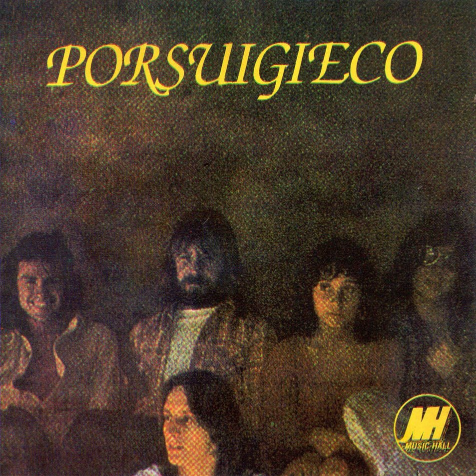
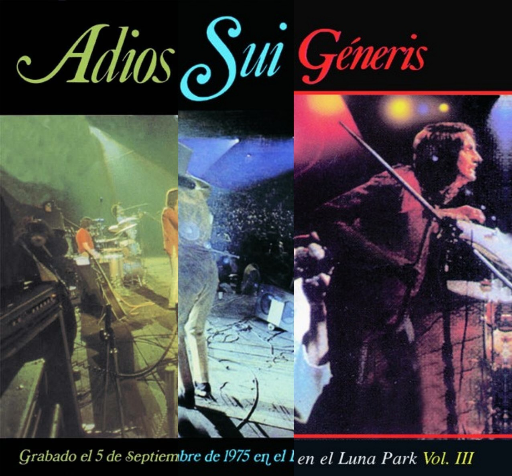
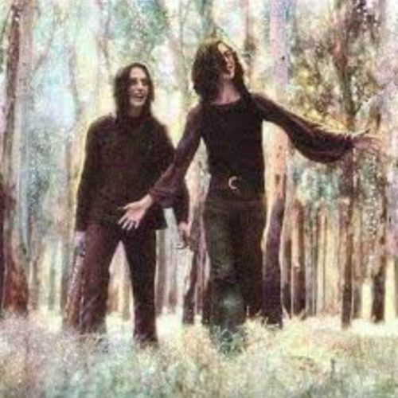
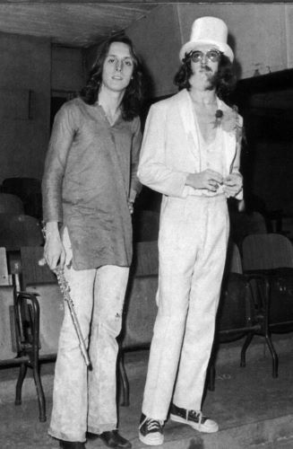
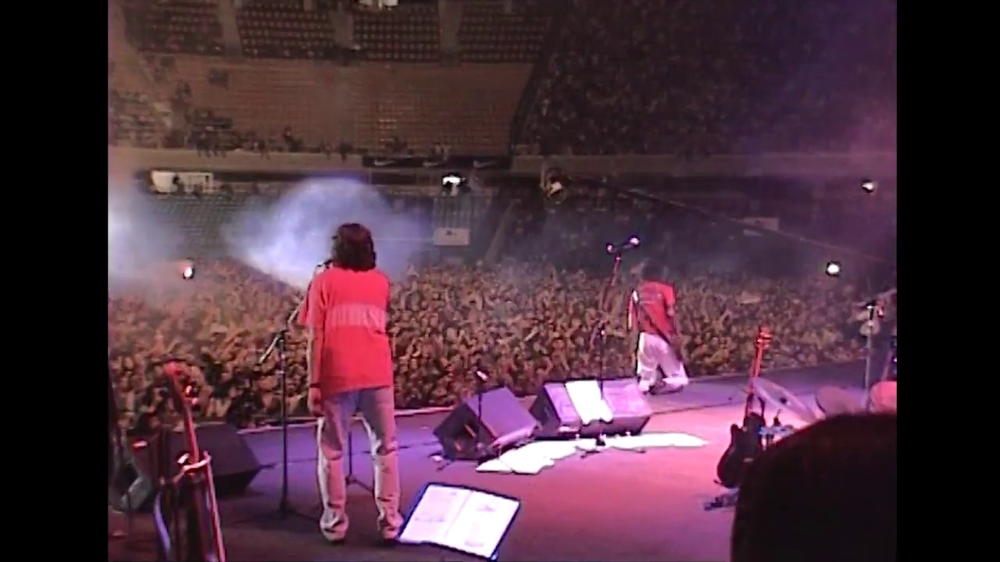

Discos de la banda
Discos de estudio

- (1972)
- Canción para mi muerte
- Necesito
- Dime quien me lo robo
- Estación
- Toma dos blues
- Natalio Ruiz, el hombresito del sombrero gris
- Mariel y el Capitan
- Amigo vuelve a casa pronto
- Quizás, porque
- Cuando comenzamos a nacer
- Pos ludio

- (1973)
- Cuando ya me empieze a quedar solo
- Bienvenidos al tren
- Un hada, un cisne
- Confesiones de invierno
- Rasguña las piedras
- Lunes otra vez
- Aprendizaje
- Mr. Jones
- Tribulaciones, lamento y ocaso de un tonto
- Alto en la torre

- (1974)
- Instituciones
- Tango en segunda
- El show de los muertos
- Las increibles aventuras del señor tijeras
- Pequeñas delicias de la vida conyugal
- El tuerto y los ciegos
- Musica de fondo para cualquier fiesta animada
- Tema de Natalio
- Para quien canto yo entonces
- Juan represión
- Botas locas
Discos con alguna peculiaridad

- (1976)
- Es el disco de una superbanda, fusión entre
Sui Generis, Leon Gieco y Raúl Porchetto - La mamá de Jimmy
- Fusia
- Viejo, solo y borracho
- Burbujas musicales
- Tu alma te mira hoy
- Las puertas del acuario
- Quiero ver, quiero ser, quiero entrar
- Mujer del bosque
- Todos los caballos son blancos
- Antes de la gira
- La colina de la vida
- El fantasma de canterville

- (1975)
- Sui Generis se separa y realizan este ultimo concierto como despedida
- Instituciones
- La fuga del paralítico
- Natalio Ruiz, el hombrecito del sombrero gris
- Confesiones de invierno
- Canción para mi muerte
- La niña juega en el gran jardin
- Zapando con la gente
- Aprendizaje
- Un hada, un cisne
- Pequeñas delicias de la vida conyugal
- Tango en segunda
- Rasguña las piedras
- Blues del levante
- Cuando ya me empieze a quedar solo
- Nena
- Bubulina
- Fabricante de mentiras
- El fantasma de canterville
- Para quien canto yo entonces
- (1999)
- Sui Generis se re-arma despues de años,
y sacan este disco 25 años despues de su separación - El dia que apagaron la luz
- Usame un poquito mas
- Yo soy su papá
- Afuera de la ciudad
- Tu pueblo también
- Cuando te vayas
- No es el fin
- Todos van a News Cafe
- Ten pena
- Aquí sin tu amor
- Aguante la amistad
- El niño y yo
- Espejos
- Monoblock
- Me tiré por vos
- Noveno "B"
- Juan represión
- Digo de vos
- Se mi nena
Que pasó con los integrantes?
Charly garcía se convirtió en el mejor musico de la historia
del rock argentino, en el camino, fundó:
La maquina de hacer pajaros (1976-1977)
Seru Girán (1978-1982)
Y tiene una exitosa carrera de solista desde el 1982 hasta la actualidad
Nito Mestre se volvió un reconocido artista argentino,
pero en un segundo plano desde su salida de Sui Generis. Fundó:
Nito mestre y los desconocidos de siempre (1976-1980)
Galeria






